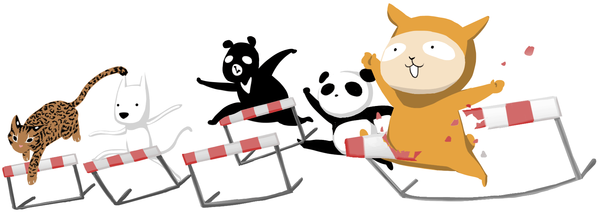
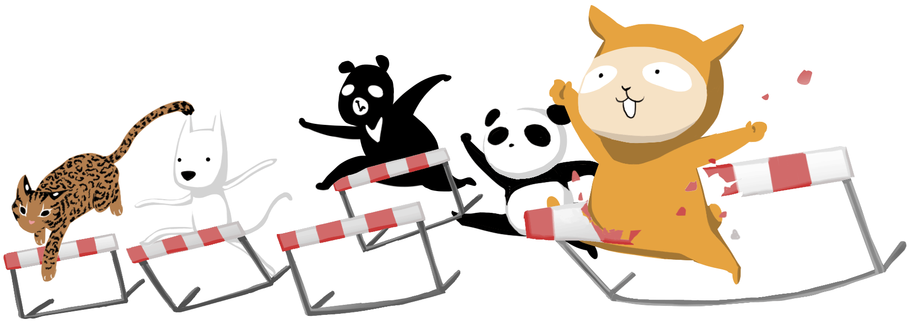
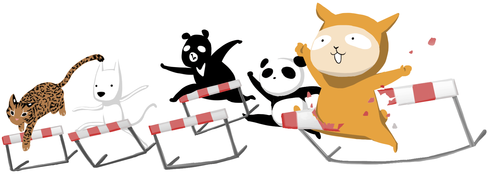
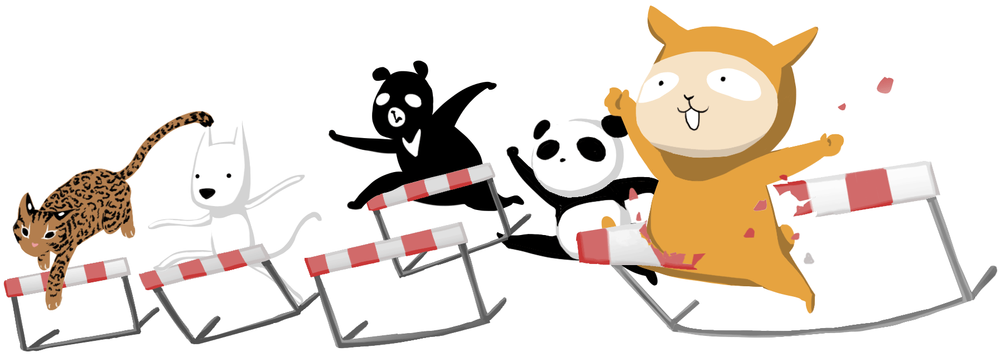

我們是一群的人。
我們來自台灣的各個角落。
我們有一個很簡單而實際的夢想：相信台灣可以更好。讓台灣更好的力量，來自於更多主動參與、向外關注的公民，所以，我們致力於降低公民參與政治的門檻。
沃草的英文名字Watchout，原意是提防和警戒。只要我們每個小小公民都能時時張大眼睛、提高警覺，政客就不容易為所欲為，台灣的公民社會才能茁壯。
在一連串由新世代發起的社會運動之中，沃草正式成立。
用直播帶公民跨越高牆，詳實描寫立法院議事現場，產出第一手報導。
國會無雙2.0改版，公民監督國會再進化。
台灣史上第一次，市長給問。藉由網路提問與連署，人民與未來的市長直接溝通。
那些年被借去考數理化的公民課，現在補課也不遲。目前由烙哲學社群，穩定為公民社會提供批判思考的教材。
立委候選人化身戰士，誰來捍衛民主正義價值，由你來決定。兩千多筆立院議事資料，七大議題，視覺化給你看。
台灣史上第一次，三個政黨，四個總統候選人給問。沃草與Google台灣、蘋果日報、Ptt實業坊協力推出。
總統給問嗎參戰總統辯論會，由公民連署的提問首次在電視上與候選人面對面。
兩年三個月，累積了一千篇報導，讓更多人能知國會大小事。
台灣史上第一次，開放國會松，沃草與台灣公民要用科技、創意和熱血強制更新立法院。
國會無雙直播累積觀看人次
2014年市長給問嗎網路連署提問人次
候選人回答率
2016年總統給問嗎網路連署提問人次
候選人回答率
立院議事紀錄資訊視覺化
專業國會報導
國會直播
邏輯思辨文章
繼續向前，我們需要你的支持
與日星鑄字行合作印製
那些年與阿草一起追的理想
新聞、講座、優惠
阿草與夥伴精心設計的實用禮品
支持沃草的你，就是享有草民權的草民
今日直播由你決定幫你在乎的議題集氣
與阿草一起和草民們線上聊天爆掛
台灣因你的成就而偉大
進階互動等你來解鎖
沃草的核心目標是：讓更多人一起來參與公民社會。一個成熟的公民社會，不能只靠少數人付出一切，投入社會運動。如果大家一起付出，只需要各自一小部分的時間心力，就能改變這個社會，更靠近那個你我嚮往的小國小民、好國好民。